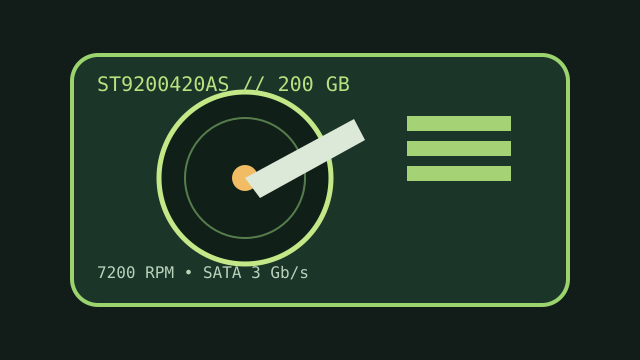

[ IDENTIFIED HDD // MODEL-SPECIFIC RECORD ]
Seagate Momentus 7200.2 ST9200420AS
200 GB, 2.5-inch SATA performance-oriented mobile HDD. Confirm “AS” in the full model code; the PATA models in the series use other suffixes.

IDENTIFICATION: Match exact suffix and firmware. The 7,200 RPM model has different power, heat and acoustic characteristics from slower mobile drives.
Recorded specifications
| Exact model / capacity | ST9200420AS / 200 GB nominal |
|---|---|
| Form factor / height | 2.5-inch / 9.5 mm |
| Interface | Serial ATA, up to 3 Gb/s, with NCQ |
| Rotation / cache | 7,200 RPM / 16 MB buffer |
| Sector / recording format | 512 bytes per sector; perpendicular magnetic recording (PMR), not 512e. |
Compatibility, noise, shock and reliability
- Requires a SATA host and 5 V drive power. Check 9.5 mm bay clearance, thermal ventilation, BIOS support and the host's reported geometry before installation.
- Seagate specifies mode-dependent noise (about 2.3 bel idle, up to 3.0 bel seeking) and shock limits of 300 G operating (2 ms) / 900 G non-operating (1 ms). Avoid vibration and shocks while spinning.
- QuietStep ramp-load and load/unload specifications describe design features, not a promise that an aged drive is quiet or reliable. Back up data and do not stress-test a drive with important data.
- The ATA sector presentation is 512 bytes per sector; verify the actual unit with IDENTIFY before cloning or using a legacy host.
Manufacturer documents
- Seagate Momentus 7200.2 Data SheetManufacturer model-family sheet with capacity, interface and performance data.
- Seagate Momentus 7200.2 SATA Product Manual, Rev. DManufacturer installation, environmental and technical manual.
- Seagate Manuals LibraryOfficial documentation index for alternate product revisions.